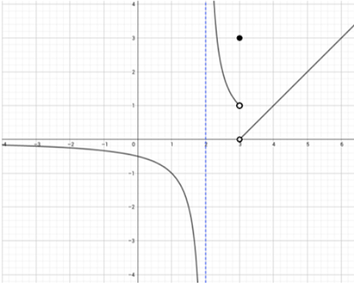

Problema 21
Dada la siguiente gráfica de una función \(f(x)\):
Calcular los siguiente:
1. \( \displaystyle \lim_{x\to 2^+} f(x) = \)
Este tipo de límites se pueden calcular con tal solo observar la gráfica. En este caso, el resultado es infinito positivo; sin embargo, vamos a complementar la respuesta con su justificación mediante la definición de límite infinito: $$ \displaystyle \lim_{x\to 2^+} f(x) = \infty \Longleftrightarrow \forall \varepsilon > 0, \exists M > 0 : 0 < x-2 < M \rightarrow f(x) > M $$2. \( \displaystyle \lim_{x\to 2^-} f(x) = \)
$$ \displaystyle \lim_{x\to 2^-} f(x) = -\infty \Longleftrightarrow \forall \varepsilon < 0, \exists M > 0 : 0 < 2-x < M \rightarrow f(x) < M $$3. \( \displaystyle \lim_{x\to 3^+} f(x)=\)
$$ \displaystyle \lim_{x\to 3^+} f(x)=0 \Longleftrightarrow \forall \varepsilon > 0, \exists \delta > 0 : 0 < x-3 < \delta \rightarrow |f(x)-0| < \varepsilon $$ 4. \( \displaystyle \lim_{x\to 3^-} f(x)=\) $$ \displaystyle \lim_{x\to 3^-} f(x)=1 \Longleftrightarrow \forall \varepsilon > 0, \exists \delta > 0 : 0 < 3-x < \delta \rightarrow |f(x)-1| < \varepsilon $$ 5. \( \displaystyle \lim_{x\to 3} f(x)=\) Dado que \( \displaystyle \lim_{x\to 3^+} f(x) \not=\displaystyle \lim_{x\to 3^-} f(x) \), se dice que $$ \displaystyle \lim_{x\to 3} f(x)=\nexists, $$ es decir, no existe. 6. \( f(3)=\) Nótese que el punto \( (3, 3) \) forma parte de \(f(x)\), por lo cual, \(f(3)=3\). 7. \( \displaystyle \lim_{x\to -\infty} f(x)=\) $$ \displaystyle \lim_{x\to -\infty} f(x)=0 \Longleftrightarrow \forall \varepsilon>0, \exists M < 0 : x < M \rightarrow |f(x)-0| < \varepsilon $$ Las definiciones mencionadas son muy importantes y la mayoría de las veces no se les da mucha importancia como a la definición formal de límite que todos conocemos, la cual vale la pena enunciar a continuación: $$ \displaystyle \lim_{x\to a} f(x)=L \Longleftrightarrow \forall \varepsilon > 0, \exists \delta > 0 : 0 < |x-a| < \delta \rightarrow |f(x)-L| < \varepsilon. $$